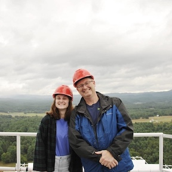
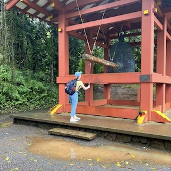
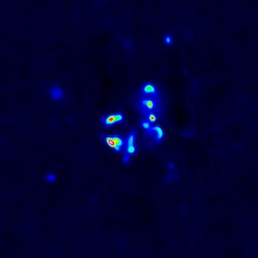
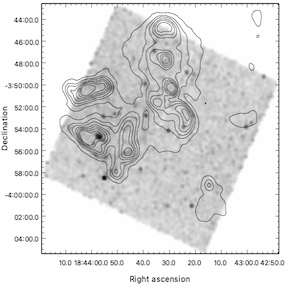

100 Meter Telescope, GBO
Undergraduate Student at Furman University
Welcome to my website! My name is Madeleine Edenton and I am a senior undergraduate at Furman University. Thanks for stopping by, and don't hesitate to reach out and contact me!

I am a senior undergraduate at Furman University in beautiful Greenville, South Carolina, studying physics and applied mathematics, with a minor in data analytics. Astronomy is my passion and I have many research interests within the field, which I believe my physics, math, and data background will prepare me for. See my research interests section for more specifics on what I've done and hope to do in the future!
Outside of science, I have a lot of other interests! I'm a big fan of picnics, hiking, and looking casually up at the sky. In my spare time, I enjoy crafting, baking, admiring frogs, and gaming. I used to figure skate and still love to watch competitions!

100 Meter Telescope, GBO
Latest picnic adventure

Byodo-In Temple
My research interests are broad but primarily exist in the realms of radio astronomy, cosmology, galaxy evolution, and transients.


I've worked in several areas of physics, math, and astronomy. More information on the projects I've done can be found on my research page:
Click here to view a downloadable copy of my CV.